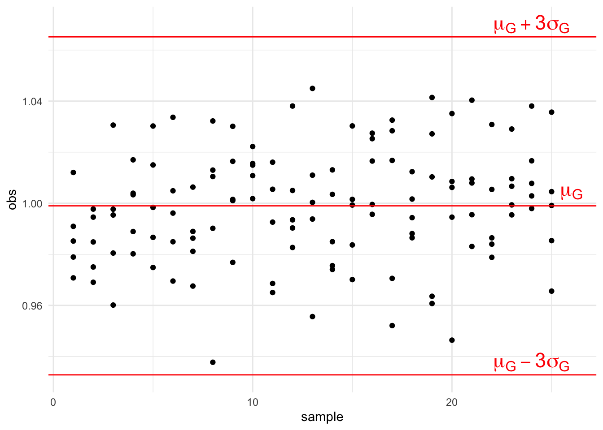
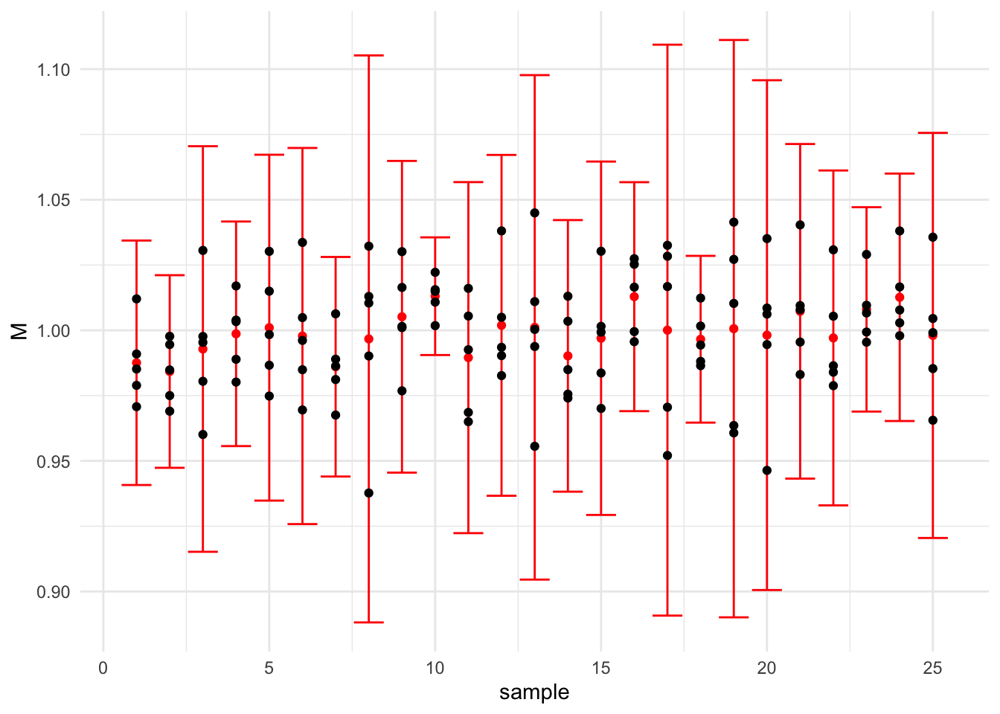
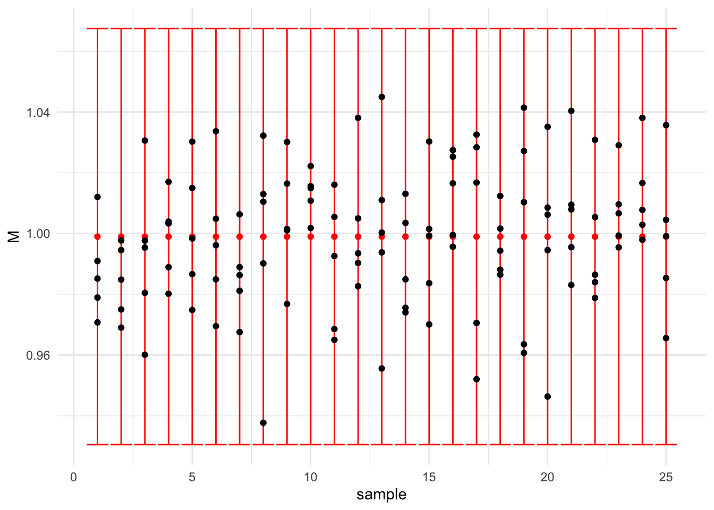

1 Estimation des paramètres du procédé
1.1 Introduction
Un procédé de fabrication même lorsqu’il est sous contrôle connait des variations aléatoires (peu importantes).
Ces variations sont assignables aux 5M (voir figure). La dispersion globale du procédé de fabrication notée \(D_G\) rend compte de ces fluctuations.
 Lien vers le cours de Patrice Hardouin
Lien vers le cours de Patrice Hardouin
- Les variations qui sont imputables aux machines sont particulièrement étudiées. On note \(D_M\) la dispersion due aux machines, on parle aussi de dispersion instantanée.
En pratique, on prélève \(k\) échantillons de même effectif \(n\).
Exemple : on prélève à intervalles réguliers 25 échantillons de 5 unités de production. Les observations fluctuent autour de \(y=1\). Ces fluctuations sont aléatoires et peu importantes (\(\pm\) 5%).
Les données sont disponibles ici
1.2 Estimation des paramètres globaux (\(\mu_G,\sigma_G\))
Dans notre exemple précédent on estime la moyenne et l’écart type du procédé à partir des \(k\times n\) observations :

On suppose que les observations suivent une loi normale de moyenne \(\mu_G\) et d’écart type \(\sigma_G\). Cela permet de dire que la proportion théorique de données dans
\([\mu_G-\sigma_G,\mu+\sigma_G]\) est de 68.3 %,
\([\mu_G-2\sigma_G,\mu+2\sigma_G]\) est de 95.4 %,
\([\mu_G-3\sigma_G,\mu+3\sigma_G]\) est de 99.7 %.
Pour la dispersion globale on choisit \[D_g=6\sigma_G.\]
Estimation des paramètres de production
On prélève \(k\) échantillons de même effectif \(n\). On note \(y_{ij}\) la valeur \(i=1,...,n\) de l’échantillon \(j=1,...,k.\) Une estimation de \(\mu_G\) est \[\hat \mu_G=\frac 1{k} \displaystyle\sum_{j=1}^k \bar y_{j},\] et une estimation de \(\sigma_G\) est \[\hat \sigma_G= \sqrt{\frac{\displaystyle\sum_{j=1}^k\sum_{i=1}^n(y_{ij}-\hat \mu)^2}{n\times k-1}}.\]
Calculer dans l’exemple une estimation de la moyenne et de l’écart type global :
Voir la correction
mean(df$obs)
sd(df$obs)1.3 Estimation des paramètres instantanés (\(\mu_I,\sigma_I\)):
On prélève un échantillon à un instant donné (ainsi les variations sont uniquement dues à la machine) et on suppose que les valeurs sont distribuées selon une loi normale de moyenne \(\mu_I\) et d’écart type \(\sigma_I.\) Naturellement, la dispersion instantanée sera définie par \(D_I=6\sigma_I.\)

On voit dans cet exemple que les variations instantanées sont assez fluctuantes (c’est logique puisque pour chaque estimation on ne considère que 5 observations…) .
Raisonnablement on peut estimer que \(\mu_I\simeq \mu_G\), par contre il existe plusieurs estimations possibles de \(\sigma_I\) :
la première est basée sur le calcul des écarts types des \(k\) échantillons prélevés.
la deuxième est basée sur le calcul des étendues des \(k\) échantillons prélevés.
Pour ces calculs on appliquera des coefficients de correction :
Le coefficient \(d_2(n)\) correspond à l’espérance de l’étendue d’une loi normale centrée réduite et
Le coefficient \(c_4(n)\) à l’espérance de l’écart type d’une loi normale centrée réduite.
Les fonctions c4,d2,d3 du package multiSPC permettent d’estimer ces paramètres :
c4(5)- On sait pour chaque échantillon \(j\) de \(n\) valeurs calculer une estimation de l’écart type \(\sigma_j\) en calculant \[s_j= \sqrt{\frac{\displaystyle\sum_{i=1}^n(y_{ij}-\bar y_j)^2}{n-1}},\] où \(\bar y_j\) est la moyenne de l’échantillon \(j.\)
Estimation à partir des écarts types
On considère \(k\) prélèvements de taille \(n\) dont les écarts types sont \(s_1,...,s_k,\) on pose \(\bar S =\frac{\sum_{j=1}^k s_j}{k}\). Une estimation de l’écart type instantané \(\sigma_M\) est donné par \[ \hat \sigma_M=\dfrac{\bar S}{c_4(n)}. \]
- Pour chaque échantillon \(j\) on calcule l’étendue
\[ R_j=\max(y_{ij})-\min(y_{ij}) \]
Estimation à partir des écarts types
On considère \(k\) prélèvements de taille \(n\) dont les étendues sont \(R_1,...,R_k,\) on pose \(\bar R =\frac{\sum_{j=1}^k R_j}{k}\). Une estimation de l’écart type instantané \(\sigma_M\) est donné par \[ \hat \sigma_M=\dfrac{\bar R}{d_2(n)}. \]
Faire ces deux calculs sur les données de l’exemple précédent.
Voir la correction
# Estimation à partir des écarts types
tab<-df %>% group_by(sample) %>% summarise("s_j"=round(sd(obs),5))
mean(tab$"s_j")/c4(5)
# Estimation à partir des étendues
etendue<-function(X){return(max(X)-min(X))}
tab2<-df %>% group_by(sample)%>% summarise("R_j"=etendue(obs))
mean(tab2$"R_j")/d2(5)Et alors on obtient :
